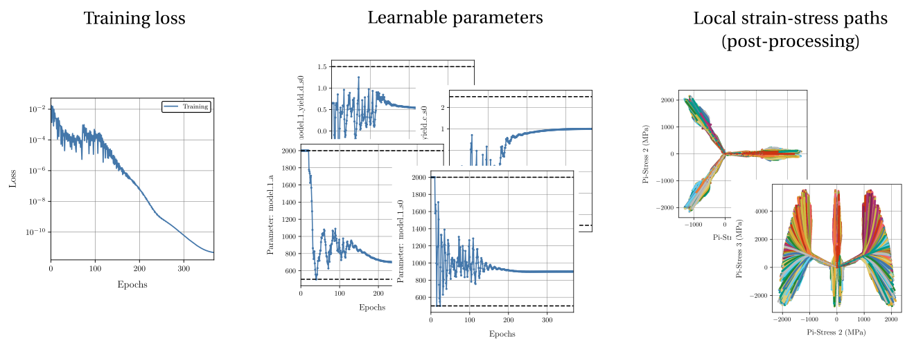

Global material model updating¶
One of the distinguishing functionalities of HookeAI is the ability to perform global, indirect material model updating. Given a specimen’s displacement-force data, obtained from experimental tests or numerical simulations, and a given parametric material model, the Automatically Differentiable Model Updating (ADiMU) framework is leveraged to identify the optimal parameters of the material model that best explain the material response observed in the data.

Key resources¶
Source file/directory |
Description |
|---|---|
|
Directory containing the core implementation of ADiMU’s global material model updating framework, including the data handling, the material finder forward model, and the model updating procedure. |
|
Directory containing a set of pre-configured user scripts to perform global model updating. |
Model updating procedures¶
Alongside the material finder forward model (material_discovery.py), HookeAI provides the required modules to perform the two main procedures involved in global model updating: (i) the specimen’s data encoding procedure (specimen_data.py), where the relevant specimen’s data is loaded and stored in suitable data structures, and (ii) the training procedure (training.py), which implements the optimization loop to update the material model parameters.
The specimen’s data is encoded in a dedicated class (SpecimenNumericalData) that essentially stores two data components. On the one side, it stores the specimen’s discretization in a finite element mesh, namely the nodes coordinates and elements connectivities. On the other side, it stores the specimen’s displacement-force data, namely the full displacement field history, the reaction forces history, and the Dirichlet boundary constraints.

The material finder forward model (MaterialModelFinder) is the core piece of the global model updating procedure. It consists of a fully implicit, automatically differentiable finite element model that essentially computes the specimen’s internal forces history based on the provided displacement field history and the selected material model architecture. These internal forces are then assembled together with the provided reaction forces history to finally compute the force equilibrium loss that drives the material model updating process. The material finder model parameters are the parameters of the selected material model architecture, which can be any conventional (physics-based), neural network (data-driven), or hybrid material model, and is integrated by means of a dedicated class (StructureMaterialState).
Note
The material finder forward model (MaterialModelFinder) involves three different types of forward propagation: (i) a standard time-wise approach where each time step is processed sequentially, (ii) an element-wise sequential approach where each element is processed sequentially taking into account its whole deformation history, and (iii) an element-wise sequential approach leveraging PyTorch’s vectorizing maps to significantly improve processing time and memory efficiency (check Figure 4). Despite requiring that the material model architecture implementation is compatible with PyTorch vectorizing requirements, the latest approach is recommended for a feasible, efficient global model updating process.
The training procedure is highly customizable, allowing the user to select different optimization algorithms, learning rate schedulers, loss functions, and other hyperparameters. It also provides a detailed logging and a set of output files that summarize the training process and results.
{kind=link}
Pre-configured user scripts¶
HookeAI provides a set of pre-configured user scripts to perform the different global model updating procedures. These scripts can be readily used and demonstrate the typical workflow, from the specimen’s data encoding procedure to the discovery of the selected material model’s optimal parameters. They also include all the required pre-processing steps, such as loading the specimen’s data and setting the material model architecture, and can be easily adapted to suit specific user needs, without the need to implement the entire workflow from scratch.